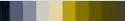
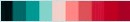

Design Ideals
The premise for the design was to make a readable, minimalistic design. Ideally the site would have clean styling on the elements present, without bogging down the user.
Text and fonts
The chosen font is a sans-seriff font for easier readability (as per w3)
Headings are distinguised using the color theme and a band.
The band is achieved using a black semi-opaque layer so that the colour is not
blinding when used in dark mode.
Text colour is chosen for maximum contrast (both in light and dark mode).
Colour Palette
The colour palette was chosen to stick to spectrums that are discernable to the three most common forms of colorblindness while feeling warm and comfortable. The colour palette can be found online here
| The colour palette | |
| In simulated deuteronopia | |
|  | In simulated protanopia |
|  | In simulated Tritanopia |
Accessibility
The site was designed following w3's accessibility principles It uses a minimum contrast ratio of 5:1 (recommended 4.5:1 or higher) - and that is for the large title text.
Usability
The side-bar allows navigation from anywhere within the site, it features flexible scaling with subset scaling of elements (buttons & fonts).
Scaling operates down to a minimum width, along with the font size, to prevent it from getting too small to read.
The bar features hover over effects with smooth transitions. It greys out the current page to aid in orienting the user.
images auto-resize to fit the screen, all of this together allows for a smooth experience on desktop, half-width and mobile
This applies to image-grids as well,
Dark Mode
Dark mode has been included via some short java code. This is a non-essential (but often appreciated) aspect of web-design. Dark mode replaces the background with pure black, and makes text white. The header and navbar have both been made dark by default to allow consistent colour themes in dark/light mode.
Known Issues
Due to it being implented with java, which I am only just learning, dark mode implementation has issues. Most importantly, it does not save the setting! I have kept it in because reading/spellchecking this is a lot easier with it on.